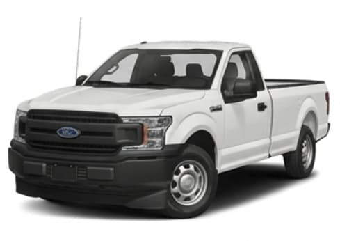

Vehicle profile
2020 Ford F-150 XL
Start with the essentials. Open a category when you need a closer look.
Explore specifications
Vehicle specifications
Open a category to see its details.
EnginePower & fuel
DimensionsSize & capacity
SafetyNHTSA & IIHS ratings
WarrantyCoverage periods
Specifications transcribed from the supplied course reference; values have not been independently verified. A dash means the source does not provide a value.